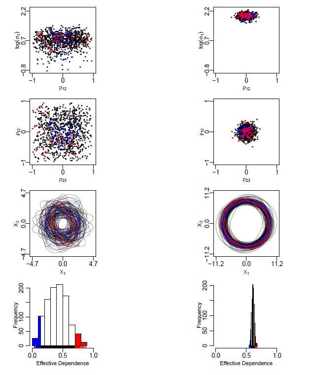
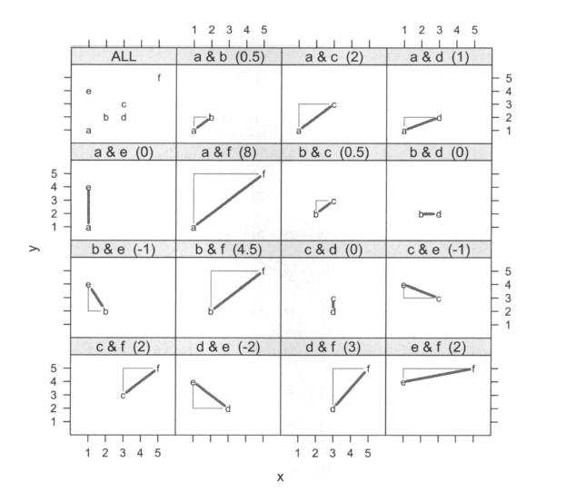
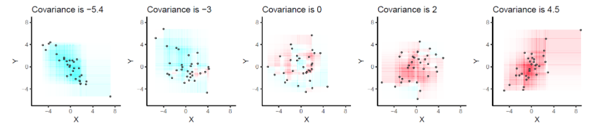

Chapter 4 Vizualization of covariance
4.1 State of the art: different attempts to represent the covariance
4.1.1 diagramme de Venn
A Venn diagram is a widely used diagram style that shows the logical relation between sets, popularized by John Venn in the 1880s. The diagrams are used to teach elementary set theory, and to illustrate simple set relationships in probability, logic, statistics, linguistics and computer science. A Venn diagram uses simple closed curves drawn on a plane to represent sets. Very often, these curves are circles or ellipses.
4.1.2 Visualizing Distributions of Covariance Matrices
Covariance matrices and their corresponding distributions play an important role in statistics. To understand the properties of distributions, we often rely on visualization methods. (Tokudaa and co 2011)
Visualizing a distribution in a high-dimensional space is a challenge, with the additional difficulty that covariance matrices must be positive semi-definite, a restriction that forces the joint distribution of the covariances into an oddly-shaped subregion of the space.

4.1.3 A Geometrical Interpretation of an Alternative Formula for the Sample Covariance
Kevin Hayes (Hayes 2011) proposes a new geometric and visual interpretation of covariance, based on the application of Hefferman’s formula for variance. He extends this formula to the covariance of a sample to extract his results.
- formula from heffernan definition of covariance :
\[cov(X,Y)= \frac{2}{n(n-1)}\sum_{i=1}^{n-1}\sum_{j>i}^{n}\frac{1}{2}(x_i-x_j)(y_i - y_j)\]
Geometrically, \(\frac{1}{2}(x_i-x_j)(y_i - y_j)\) is ±1 times the area right-triangle formed with the difference vector \((x_i — x_j, y_j)\) as its hypotenuse, where negatively sloped difference tors incur a \((—1)\) sign and positively sloped difference vectors take a \((+1)\) sign. (Hayes 2011)

4.1.4 Covariance as Signed Area of Rectangles
This article (Chudzicki 2014) was written following a very interesting conversation on the stats.statckexchange site. The initial topic of this conversation was: how to explain covariance to someone who only understands the notion of mean?
instructions for use :
- Draw all possible such rectangles. Color them transparently, making the positive rectangles red (say) and the negative rectangles “anti-red” (blue).
- The covariance is the net amount of red in the plot (treating blue as negative values).
Let’s deduce some properties of covariance. Understanding of these properties will be accessible to anyone who has actually drawn a few of the rectangles. :
- Bilinearity.
Because the amount of red depends on the size of the plot, covariance is directly proportional to the scale on the x-axis and to the scale on the y-axis.
- Correlation.
Covariance increases as the points approximate an upward sloping line and decreases as the points approximate a downward sloping line. This is because in the former case most of the rectangles are positive and in the latter case, most are negative.
- Relationship to linear associations.
Because non-linear associations can create mixtures of positive and negative rectangles, they lead to unpredictable (and not very useful) covariances. Linear associations can be fully interpreted by means of the preceding two characterizations.
- Sensitivity to outliers.
A geometric outlier (one point standing away from the mass) will create many large rectangles in association with all the other points. It alone can create a net positive or negative amount of red in the overall picture.

4.2 Our current project: the package plotnetrec
Le package plotnetrec et leurs graphiques associées est une représentation alternative d’un scatterplot. Le but étant de déceler certaines particularités d’un jeu de données.
Il est temps de comparer avec certaines problèmatique.
4.2.1 Hetrogeneity
4.2.2 Heterosdasticity
4.2.3 Non linear relationship
References
Chudzicki, David. 2014. Covariance as Signed Area of Rectangles. https://www.davidchudzicki.com/posts/covariance-as-signed-area-of-rectangles/.
Hayes, Kevin. 2011. Geometrical Interpretation of an Alternative Formula for the Sample Covariance. https://www.jstor.org/stable/23020503.
Tokudaa, Tomoki, and co. 2011. Visualizing Distributions of Covariance Matrices. University of Leuven, Belgium, Columbia University, New York, NY, USA.